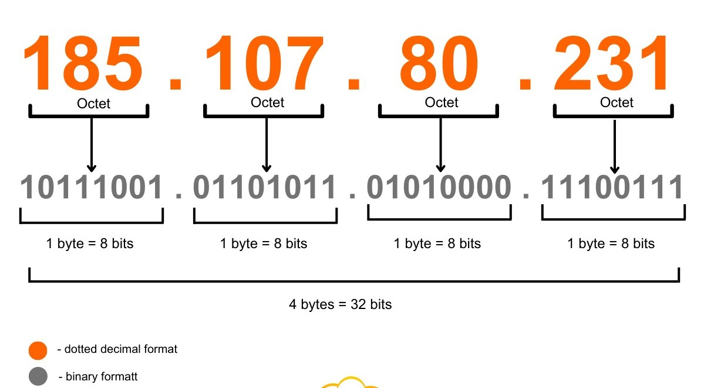
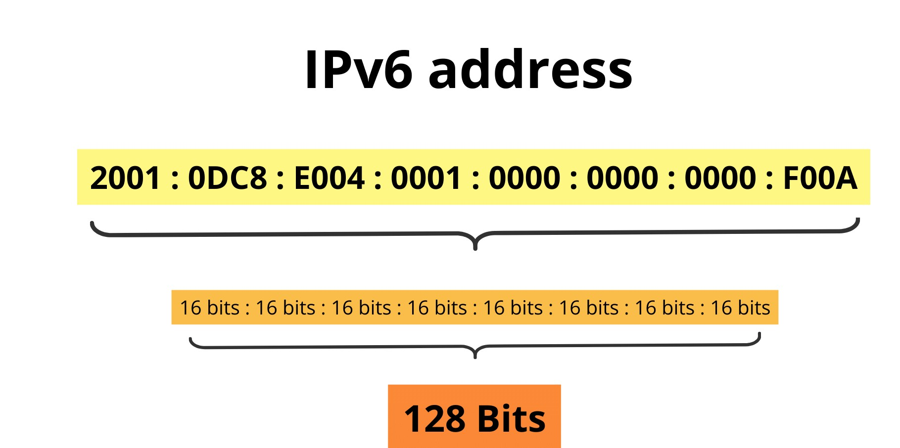

| 2 . IP(INTERNET PROTOCOL) ADDRESS |
- WHAT IS IP ADDRESS ?
- IP Address (Internet Protocol Address) is a unique number given to every device (computer, phone, server, etc.) connected to a network or the internet.
- Think of it like a home address – just as your house address tells the postman where to deliver letters, an IP address tells the internet where to send data.
Example: 192.168.1.1 (IPv4) or 2400:cb00:2048:1::c629:d7a2 (IPv6).

IP VERSIONS
IPv4
- IPv4 is the original IP address format. It uses a 32-bit number divided into four 8-bit sections written as decimal values from 0 to 255 (for example, 172.217.16.142). This setup allows for about 4.3 billion unique addresses
- When the internet was designed 4.3 billion addresses seemed sufficient but the explosion of connected devices (computers, phones, servers, smart gadgets) quickly depleted the available pool. This scarcity is the main reason public and private IP addresses were introduced and why the transition to IPv6 became necessary.

IPv6
-
IPv4 vs IPv6 Address Size: IPv4 has 32-bit addresses (about 4.3 billion), while IPv6 has 128-bit addresses, which is much, much bigger.
- Huge Number of Addresses: IPv6 can create around 340 undecillion unique addresses, solving the problem of running out of IP addresses.
- IPv6 Uses Hexadecimal: IPv6 addresses use numbers (0-9) and letters (a-f) instead of only numbers.
- Address Format: It has 8 groups of 4 characters, separated by colons (:).
Example: 2001:0db8:85a3:0000:0000:8a2e:0370:7334.

------------------------------
- Definition – A Public IP address is the globally unique identifier of your network on the internet.
- Uniqueness – It must be one of a kind worldwide; no two devices can have the same public IP at the same time.
- Purpose – Allows your network or server to be reachable from anywhere in the world, enabling websites, email, gaming servers, streaming platforms, etc.
- Assignment – Assigned by your Internet Service Provider (ISP). You do not permanently own it. It’s leased to you.
- Visibility – When you visit a site like whatismyip.com the IP shown is your public IP, the one your router uses to talk to the internet.
- Who has it – Examples include your home router, servers hosting Google, Netflix, YouTube, banking sites, etc.
- Analogy – Like a company’s main phone number: it’s the single point of contact the outside world uses to reach the organization.
PRIVATE IP ADDRESS
_____________________
- Definition – A Private IP address is a local address used only within your private network (home Wi-Fi, office LAN, etc.).
- Uniqueness – Must be unique only inside your local network, not globally. Example: Your laptop and my laptop can both be 192.168.1.100 on different networks without conflict.
- Purpose – Lets devices in the same local network communicate:
- Laptop → Printer
- Phone → Chromecast
- PC → Wi-Fi Router
- Assignment – Given automatically by your router (using DHCP).
- Reserved Ranges – Three blocks are set aside for private use:
10.0.0.0 – 10.255.255.255 (large networks)
172.16.0.0 – 172.31.255.255 (medium networks)
192.168.0.0 – 192.168.255.255 (common in homes)
- Visibility – Private IPs cannot be reached directly from the internet. Only devices inside the same network can use them.
- Analogy – Like an employee’s internal extension number in an office: useful inside, but outsiders must first dial the main company number (Public IP) to reach them.

Copyright © 2025 All Rights Reserved